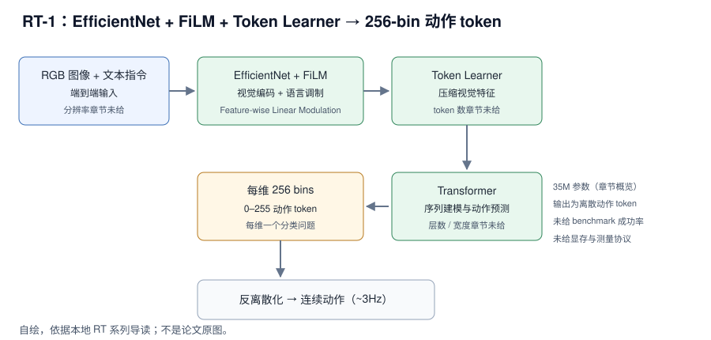

RT-1（2022）用 EfficientNet 做视觉编码、FiLM 做语言调制、Token Learner 压缩视觉特征，再由 Transformer 输出每维 256 类的离散动作 token；本地章节给的概览数字是 35M 参数、约 3Hz 实时控制、每维 256 个 bin。它的价值不是某个 benchmark 分数，而是把“连续控制”重写成“预测下一个动作词”，为后续 RT-2、RT-X 与 OpenVLA 的动作 token 化铺路。本地章节没有给成功率、训练配方、显存或延迟测量协议，因此本文按“范式 + 接口”精读，不按“可复现论文”写。
来源约定：本文事实只取自本仓库 RT 系列导读（下称“本章程”），没有用模型记忆补写论文细节。
标记约定：章节陈述＝本地导读自己的归纳；章节代码＝导读给出的 Python 示例；章节未给＝本地章节没有该信息。
版本：论文 2022 年（章节只给年份）；arXiv 编号、论文版本日期、代码 commit 章节均未给；查阅日期 2026-11-01。
1. 论文与官方资源
| 资源 | 入口 | 阅读用途 |
|---|---|---|
| 论文 | arXiv:2212.06817 | 公开入口*；本地 RT 章节未给编号，仓库其他章节引用该编号 |
| 源码 | google-research/robotics_transformer | 公开入口*；章节只说“Google 开源了 rt-1 代码”，未给路径与 commit |
| 权重 | 章节未给 | 本地章节没有给模型卡或下载入口 |
| 项目页 | robotics-transformer1.github.io | 公开入口*；章节未给 |
\* 公开入口未在本地章节核验；本地章节只用于事实核对。
论文题目：RT-1（章节未给全称）；arXiv：章节未给（公开入口见上表*）；版本：2022；代码 commit：章节未给；查阅日期 2026-11-01。
版本提示： 章节把 RT-1、RT-2、RT-X 放在同一张演进表里，35M 与 ~3Hz 是章节的概览数字，没有硬件、batch 或测量协议；不要把它们当成同一条件下的复测。全文只用这一版数字，不混用其他来源。
2. 核心问题：连续控制还是下一个动作词
一句话：RT-1 重新分配的是“连续控制”与“序列建模”的接口——把每个动作维度均匀切成 256 个 bin，让 Transformer 用分类的方式出动作，而不是回归连续值。

图 1：RT-1 的视觉、语言与动作 token 信息流。自绘，依据本地导读；不是论文原图。
与图对应的信息流：RGB 图像与文本指令 → EfficientNet 视觉编码 + FiLM 语言调制 → Token Learner 压缩视觉特征 → Transformer → 每维 0–255 动作 token → 反离散化为连续动作。
对比主流路径：连续动作回归 → 每维 256 类离散 token 分类。
- 节省了什么：章节的判断是 Transformer 擅长离散 token 序列，控制可以写成“预测下一个动作词”；不需要为每个任务单独设计连续回归头。
- 保留了什么：端到端视觉-语言-动作映射；章节称 RT-1 能 3Hz 实时输出并具有极高的抗干扰能力。
- 代价是什么：离散化带来量化误差与 bin 约定问题；每个动作维度独立分类，章节没有给维度间如何共享信息；bin 数与控制精度的权衡章节没有给消融。
- 读者该学什么：动作表示是接口设计，不是模型末尾的一个回归层。
来源：本章程 §2.1–2.3、§5。
3. 模型结构与张量流
章节只给四个模块名和一层融合关系，没有给层数、宽度、token 数或动作维度；因此本节把“已知”与“读代码要确认”分开写。
3.1 四个模块
| 模块 | 章节给出的作用 | 输入 → 输出 | 章节未给 |
|---|---|---|---|
| EfficientNet | 视觉编码 | RGB 图像 → 视觉特征 | 分辨率、backbone 规格、是否冻结 |
| FiLM | 语言指令融合 | 语言 + 视觉特征 → 调制后的特征 | γ/β 来源、注入层数、文本编码器 |
| Token Learner | 压缩视觉特征 | 视觉特征 → 少量 token | token 数、压缩比、是否可学习 |
| Transformer | 序列建模与动作预测 | token 序列 → 动作 token | 层数、宽度、注意力 mask、位置编码 |
| 动作反离散化 | token → 连续动作 | 0–255 → [a_min, a_max] | 维度顺序、夹爪维度约定 |
读代码时先确认这些常量，再谈“结构”：章节没有给视觉分辨率、patch/token 数、Transformer 层数与动作维度总数。
3.2 动作分词：每维 256 个 bin
设第 d 维连续动作 a_d，动作范围 [a_min, a_max]，词表大小 V = 256，章节代码的分词是：
t_d = floor( clip((a_d - a_min) / (a_max - a_min), 0, 1) × (V - 1) )
反分词是：
â_d = ((t_d + 0.5) / V) × (a_max - a_min) + a_min
| 设置 | 章节值 | 说明 |
|---|---|---|
| 动作范围 | [-1.0, 1.0] | tokenizer 构造参数 |
| 每维 bin 数 | 256 | vocab_size |
| token 取值 | 0–255 | floor 后的整数 |
| 离散化方式 | 均匀分箱 | 非学习式 tokenizer |
| 反离散化 | bin 中心 | (t + 0.5) / V |
| 示例 | [0.5, -0.2, 0.9] → [191, 102, 242] | 章节示例输出 |
| 动作维度 | 章节未给 | 示例只展示 3 维速度 |
章节代码有一个口径细节：tokenize 用 V - 1 做分母，detokenize 用 V 做分母，两者不是严格互逆；token 255 反解为 (255 + 0.5) / 256 ≈ 0.9980，不会回到 1.0。这是 bin 中心约定问题，上真机前要让训练与部署使用同一套约定。
3.3 FiLM 与 Token Learner
FiLM 用于融合语言指令；章节只给“Feature-wise Linear Modulation”名称与示意图，没有给 γ/β 的产生方式、注入层数，也没有说语言编码器是否冻结。Token Learner 负责把视觉特征压成更少的 token；章节没有给 token 数、压缩比或是否可学习。
读代码时看什么：语言向量从哪来（独立文本编码器还是 token embedding）、FiLM 注入哪些层、TokenLearner 输出多少 token、这些 token 与动作 token 在 Transformer 里如何排列。
3.4 Transformer 与动作头
章节只说 Transformer 输出离散动作 token，未给层数、是否 decoder-only、动作 token 的 query 来自哪里、是否一次预测多步。RT-1 的时序信息只有 3Hz 实时输出与抗干扰描述，没有 chunk 长度或重规划间隔。
来源：本章程 §2.1–2.3。
4. 实验结果
4.1 章节唯一的主表：RT 系列横向对比
协议：章节没有给任何 benchmark 名称、任务数、每任务 trials、演示数据量或种子；下表是章节 §5 的演进对比，不是同一 benchmark 的成绩表。
| 维度 | RT-1 | RT-2 | RT-X |
|---|---|---|---|
| 发布时间 | 2022 | 2023 | 2023 |
| 核心架构 | EfficientNet + Transformer | VLM（PaLI-X / PaLM-E） | RT-1 / RT-2 变体 |
| 模型参数量 | 35M | 55B | 多种规格 |
| 输入模态 | 图像 + 文本指令 | 图像 + 文本 | 图像 + 文本 + 机器人类型 |
| 输出模态 | 离散动作 token | 文本 token（解释为动作） | 离散动作 token |
| 主要贡献 | 验证 Transformer + Tokenization 可行 | 提出 VLA 范式，实现语义推理 | 验证跨机器人形态数据训练有效 |
| 推理频率 | ~3Hz | <1Hz | 视基座模型而定 |
读法：
- 35M 与 55B 是章节概览，不能直接换算出显存或延迟；章节没有给这两项的测量条件。
- RT-1 与 RT-2 的输出都叫 token，但 RT-1 是动作 bin，RT-2 是文本 token 被解释为动作；不要把它们当同一种 tokenizer。
- 章节没有给 RT-1 的成功率，因此“验证了 Transformer + Tokenization 可行”不能读成某个具体分数。
- RT-X 参数量写“多种规格”，说明章节本身没有固定基座；不要替它补 35M 或 55B。
4.2 真机与泛化
章节对 RT-1 的描述是“3Hz 实时输出”与“极高的抗干扰能力”，但没有给硬件、相机数、任务数、演示数、测试次数或成功判定。RT-2 的涌现能力是定性例子（“捡起快灭绝的动物” → 恐龙玩具），不是受控评测。这两段只能支持“方向可行”，不能支持“在某个 benchmark 上超过某模型”。
来源：本章程 §2、§3.2、§5。
5. 消融实验
章节没有消融表；它只给模块名与定性判断。下表把“章节能支撑的设计选择”与“不能当消融结论”分开：
| 设计选择 | 章节给出的证据 | 能否当消融结论 |
|---|---|---|
| 每维 256 bins | 章节说 Transformer 擅长离散 token 序列 | 否，没有连续回归对照 |
| EfficientNet 视觉编码 | 只给模块名 | 否，没有换 backbone 对照 |
| FiLM 语言融合 | 只给模块名与示意图 | 否，没有无语言/拼接对照 |
| Token Learner 压缩 | 只给模块名 | 否，没有压缩比对照 |
| ~3Hz 实时性 | 只给频率 | 否，没有测量协议 |
读者该不该复用：256-bin 均匀分箱是低成本的 first baseline，适合先把动作接口跑通；但它是否优于连续回归、bin 数取多少、是否需要 per-dim 归一化，章节都没有对照。不要把“Transformer 擅长离散 token”当成消融结论。
来源：本章程 §2.1–2.3、§5。
6. 延迟与显存怎么读
章节只给 RT-1、RT-2 两个具体频率，RT-X 写“视基座模型而定”，三者都没有测量协议。
| 模型 | 章节频率 | 反算单次策略调用 | 显存 |
|---|---|---|---|
| RT-1 | ~3Hz | 约 333 ms | 章节未给 |
| RT-2 | <1Hz | 大于 1000 ms | 章节未给 |
| RT-X | 视基座模型而定 | 章节未给 | 章节未给 |
测量协议：章节未给硬件、batch、输入是否已在 GPU、热身次数、重复次数、取中位数的方法，也未说是否包含图像预处理。
区分：3Hz 是章节给的控制频率；它不等于端到端请求延迟，也不等于动作执行频率。1000 / 3Hz ≈ 333 ms 只是由频率反算的策略调用间隔，不是实测延迟。
显存：章节没有给任何模型的显存；不要用 35M / 55B 参数量去推算。
来源：本章程 §5。
7. 训练资源与卡数
| 训练要素 | RT-1 | RT-2 | RT-X |
|---|---|---|---|
| 硬件 / 卡数 | 章节未给 | 章节未给 | 章节未给 |
| 优化器 / 步数 | 章节未给 | 章节未给 | 章节未给 |
| 有效 batch / microbatch / 累积 | 章节未给 | 章节未给 | 章节未给 |
| 学习率 / warmup / EMA | 章节未给 | 章节未给 | 章节未给 |
| 冻结模块 | 章节未给 | 章节未给 | 章节未给 |
| 数据规模 / 采样比例 | 章节未给 | 章节未给 | 章节未给 |
章节没有给训练配方，因此无法解释“35M 的小模型为什么也用多卡”——章节甚至没有说它用了多卡；也不要按参数量推算单卡可训练。
三级复现：
- 理解与评测：只能读到 tokenizer 语义与模块名；章节没有给权重，无法加载评测。
- 训练链路：章节未给损失、优化器、数据格式与保存逻辑，无法验证。
- 完整训练：章节未给卡数、步数、batch、学习率与数据采样，不能声称可复现。
来源：本章程 §2、§5。
8. 代码阅读顺序
| 顺序 | 路径 / 模块 | 阅读重点 |
|---|---|---|
| 1 | 本章程 §2.3 的 RT1ActionTokenizer 示例 | 先跑通 bin 约定，再谈模型 |
| 2 | google-research/robotics_transformer* | 公开仓库；章节未给 commit 与文件路径 |
| 3 | EfficientNet 视觉编码 | 输入分辨率、是否冻结、输出 stride |
| 4 | FiLM 层 | 语言向量如何产生、注入哪些层 |
| 5 | Token Learner | token 数、压缩比、输出维度 |
| 6 | Transformer | 层数、注意力 mask、位置编码、动作输出头 |
| 7 | 动作反离散化 | bin 中心、维度顺序、夹爪维度 |
坑：
- 章节示例的 tokenize 用
V - 1、detokenize 用V，严格互逆性未验证；直接照抄会让最大动作略小于a_max。 - 章节示例
import tensorflow as tf但正文只用到 numpy；只跑 tokenizer 片段时可以不装 TF。 - 仓库路径与 commit 章节未给；公开 main 分支可能与论文实现不同，读代码前先固定 commit。
9. 从 checkpoint 开始复现
9.1 固定源码与环境
# 公开入口*；章节未给 commit git clone https://github.com/google-research/robotics_transformer cd robotics_transformer # 环境：章节未给 Python / TensorFlow 版本，按仓库 README 自建
9.2 先检查 tokenizer 算术
import numpy as np V, lo, hi = 256, -1.0, 1.0 a = np.array([0.5, -0.2, 0.9]) t = np.floor(np.clip((a - lo) / (hi - lo), 0, 1) * (V - 1)).astype(np.int32) back = ((t + 0.5) / V) * (hi - lo) + lo print(t.tolist(), back.round(4).tolist()) # 章节示例 token：[191, 102, 242]
这组检查只验证 tokenizer 算术，不验证模型或权重；未在本机验证。
9.3 训练与换本体
章节未给训练命令、数据格式与超参，不要编造单卡配方。换本体时先对齐四项：动作范围、维度顺序、bin 数、控制频率；章节未给换本体流程。
10. 如何用到自己的项目
可复用的是“每维离散化 + Transformer 序列预测”的组合，不是照搬 35M 或 3Hz 这两个数字。
- 动作 tokenizer：把每维动作换成 256-bin 分类或更细的 bin，比较与连续回归的成功率、延迟与抖动；代价是要有动作数据、bin 约定和 per-dim 归一化。
- 语言调制接口：用 FiLM 或 cross-attention 把指令注入视觉特征，先在小数据上验证语言跟随；代价是语言编码器与注入层要调。
- 实时性预算：把 3Hz 当章节概览而非实测，先量自己的模型前向、预处理与通信，再决定控制频率；代价是需要本机计时。